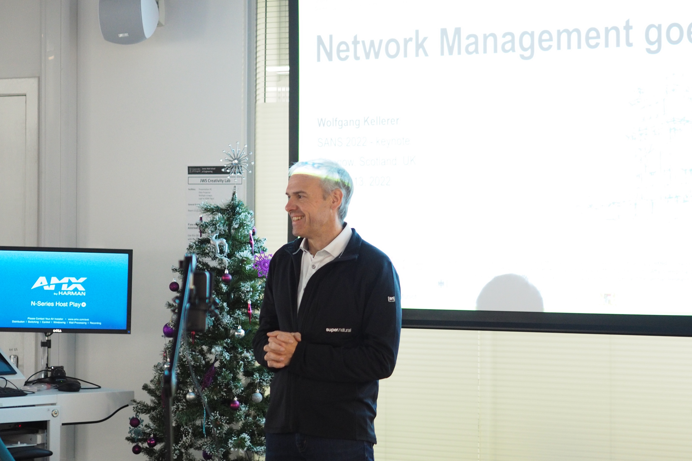

Scottish Autonomous Networked Systems - Part II (SANS 2024)
2-3rd May 2024

2-3rd May 2024
The Scottish Autonomous Networked Systems (SANS) event brings together researchers from different areas to share ideas and learn about ongoing work in relation to autonomous networked systems.
If you would like to participate or share your work relating to autonomous networked systems, go here.
This version of SANS is sponsored by SICSA.

Thursday 2nd May and Friday 3rd May 2024
The Scottish Autonomous Networked Systems (SANS) event is an opportunity to bring together researchers from different areas to share ideas and learn about ongoing work in relation to autonomous networked systems.
If you would like to share your work relating to autonomous networked systems, we are looking for short form presentations. The goal is information sharing and communitiy awareness!
Topic of relevance can include:
If you want to participate in SANS 2024, please register here!
(more info about the venue here)
| Time | Title | Details | Presentation |
|---|---|---|---|
| 09.30-10.00 | Registration | ||
| 10.00-10.15 | Welcome | ||
| 10.15-11.00 | Keynote Academic + Q&A | How to build a Network Digital Twin? Simulation vs Emulation vs ML | here |
| 11.00-11.30 | Coffee Break | ||
| 11.30-12.30 | Session 1 | Short Talks | |
| Morgan Geldenhuys | Automatic System Tuning for Distributed Stream Processing | ||
| Colin Perkins | Autonomous networks need standards | here | |
| Gyu Myoung Lee | Co-creation of composable network digital twins for autonomous control and management | here | |
| 12.30-14.00 | Lunch | ||
| 14.30-15.30 | Session 2 | Short Talks | |
| Theviyanthan Krishnamohan | OpenRASE: Virtualisaed Network Emmulation | here | |
| Marc Roper | Digital Digital Twins | here | |
| Shuja Ansari | Leveraging AI for digital twinning of wireless networks | ||
| Kelsey Collington | Informing, instructing, or ignoring: challenges and considerations for autonomy in CNI. | here | |
| 15.30-16.00 | Coffee Break | ||
| 16.00-17.00 | Session 3 | Poster Session | |
| 17.00-18.30 | Free Time | ||
| 18.30-20.00 | Social Event! | Barolo - https://maps.app.goo.gl/S34c1bKMW2Xux6vW9 |
| Time | Title | Details | Presentation |
|---|---|---|---|
| 09.30-10.00 | Registration | ||
| 10.00-10.15 | Welcome | ||
| 10.15-11.00 | Session 1 | ||
| Paulius Stankaitis | Navigating Uncertainty: Reachability Analysis for Trustworthy Autonomous Systems | ||
| Shailendra Rathore | Leveraging Machine Learning with Blockchain for Next-Generation IoT | ||
| Joanna Olszewska | Trustworthy Autonomous System Development: Beyond DevOps and MLOps | ||
| 11.00-11.30 | Coffee Break | ||
| 11.30-12.30 | Session 2 | Short Talks | |
| Ben Scott | Funding Opportunities | here | |
| Philip Rodgers | Autonomous ORAN | here | |
| Ryo Yanagida | QoS In Information Centric Networks | here | |
| 12.30-14.00 | Lunch | ||
| 14.30-15.30 | Session 3 | Panel Discussion | |
| 15.30-16.00 | Coffee Break | ||
| 16.00-17.00 | Session 4 | Short Talks | |
| Yehia Elkhatib | A Middleware for Automatic Composition and Mediation in IoT Systems | here | |
| Paul Harvey | A Standard Design Language for Autonomous Networks | here | |
| 17.00-17.15 | Closing |
Prof Albert Cabellos-Aparicio, UPC
Prof. Albert Cabellos (PhD 2008), Full Professor at Universitat Politècnica de Catalunya. In 2019 he co-founded the Barcelona Neural Networking (BNN) Center (https://bnn.upc.edu) where he is the Director. BNN’s has been created with the main goals of carrying fundamental research in the field of Graph Neural Network applied to Computer Networks and educating and training the new generation of students. He has also founded the Open Overlay Router open-source initiative (http://openorverlayrouter.org) along with Cisco. He has been a visiting researcher at Cisco Systems and Agilent Technologies and a visiting professor at the Royal Institute of Technology (KTH) and the Massachusetts Institute of Technology (MIT), National Institute of Informatics (Tokyo) and UC Berkeley. He has participated in several national, EU (FP7, H2020), USA (NSF) and industrial R&D projects.
Network Digital Twins (NDT) are a key technology for future telecommunication networks. As exemplifying features, NDT are expected to estimate future traffic load and automatically optimize the network to use minimal resources while fulfilling stringent SLAs. NDT should also be able to predict failures before happening, and take the appropriate actions. Overall, NDT offers unprecedented performance with ultra-efficient use of the hardware resources, resulting in very low CAPEX and OPEX. However, there is a certain lack of specificity in the literature that describes how to build it. In this talk we will describe how we can build a NDT and we will compare different technologies: simulation, emulation and ML techniques as well as the advantages and disadvantages that they provide.
We are looking for speaker and presentations for SANS 2024. If you are interested please get in touch paul.harvey@glasgow.ac.uk.
To arrange catering, please register for SANS 2024 here.
Participation at SANS is FREE 😀.


